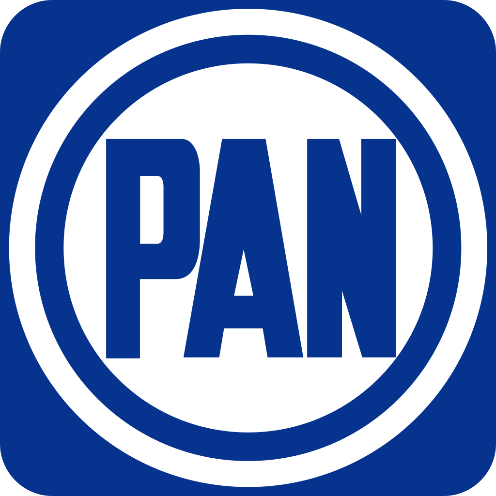

Un partido político es un grupo de ciudadanos que está constituido legalmente, según los requisitos y el orden jurídico vigente. En México, los partidos políticos deben ser registrados por la autoridad electoral como tal, y es necesario para su supervivencia que cuenten miembros afiliados, al menos el 2.4% del padrón electoral nacional; eso significa que de todos los mexicanos que tienen la mayoría de edad (alrededor de 90 millones).
Los partidos políticos tienen dos objetivos principales:
Fuente: Partido político, en Gobernación. Disponible en: http://sil.gobernacion.gob.mx/Glosario/definicionpop.php?ID=178
México es una democracia joven, y con un historial partidista bastante complejo en la dinámica política y social. A continuación se presentan los partidos políticos con presencia nacional, ordenados por fuerza de forma descendente:
Morena fue creado como una asociación civil en el 2011; tiene por nombre
Movimiento de Regeneración Nacional y obtuvo su registro como partído político en julio de 2014. El
partido se declara de izquierda, y tiene como principios de defensa la democracia, el combate a la
corrupción, y al neoliberalismo.
Actualmente, Morena es la principal fuerza política de México,
sobretodo por la corriente dominante en el partido: el lopezobradorismo, encabezada por el Presidente
de México, Andrés Manuel López Obrador.
 Partido Acción Nacional.
El PAN es la principal fuerza opositora a nivel
nacional; son una facción de derecha, pero en uno de sus últimos congresos nacioanles, se cambiaron -según
su declaración de principios a la socialdemocracia. El PAN fue el primer partido en llegar a la
Presidencia de la República en el 2000, "acabando" con la hegemonía priísta de más de 70 años. El Partido
Acción Nacional es la segunda fuerza política, sólo superada por Morena, esto tomando en cuenta su
representación en los órganos legislativos.
El Partido Revolucionario Institucional.
El PRI es uno de los primeros
partidos políticos mexicanos, fruto -por supuesto- de la evolución de otros partidos en la época
post-revolucionaria.
Mantuvo un gobierno hegemónico por más de 70 años hasta que el PAN llegó a la
Presidencia en el 2000.
El PRI es la tercera fuerza política de México en el poder legislativo, aunque
lo cierto es que lleva una larga racha de derrotas en las elecciones por gubernaturas estatales: por
ejemplo, en 2021, el PRI perdió contra la coalición "Juntos Hacemos Historia" 8 de las 8 gubernaturas que
gobernaba y que estaban en juego.
Este partido ha tenido épocas muy distintas entre sí; ha tenido
varias de las figuras políticas más relevantes del siglo pasado, como el Gral. Lázaro Cárdenas, Adolfo López
Mateos, Plutarco Elías Calles, Carlos Salinas de Gortari, Luis Donaldo Colosio, e incluso actuales figuras
de la Cuarta Transformación, entre ellos Manuel Bartlett Díaz, etc.